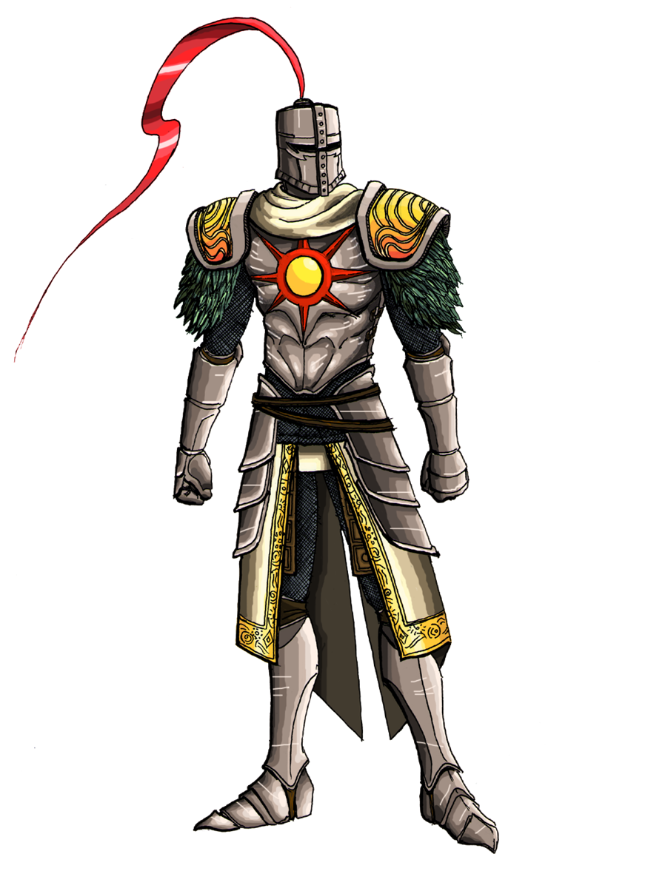
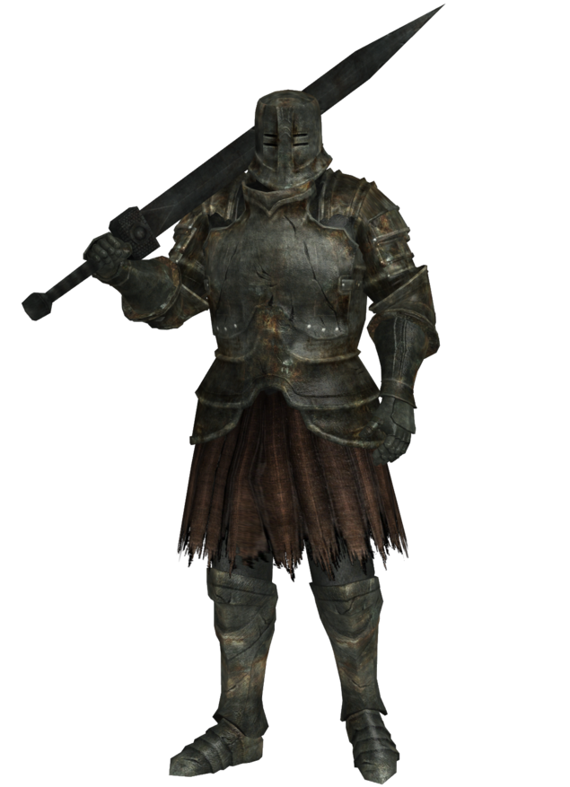
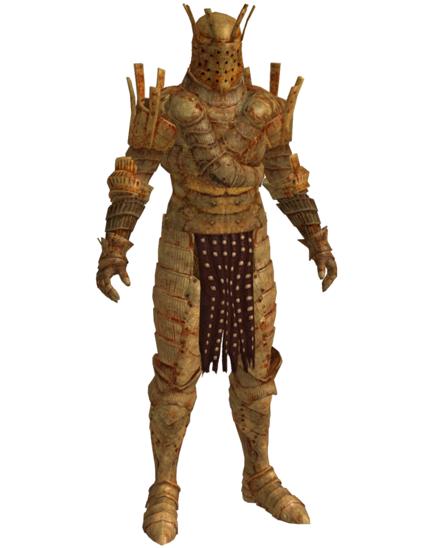
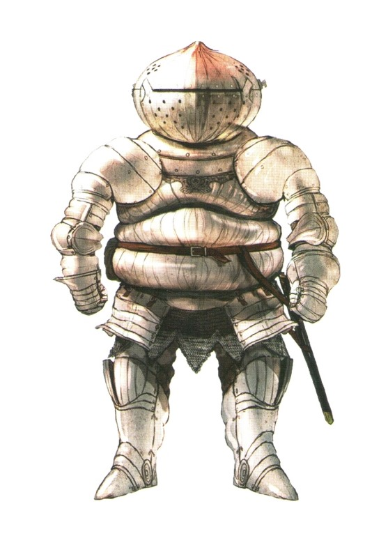
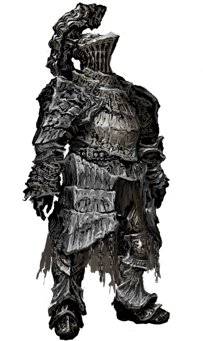

Dark Souls characters
- 
- Solaire of Astora
- Solaire of Astora is a Knight of Sunlight who will help the player in many different areas. He is a cheerful and powerful knight who does not let the crumbling world affect his mood. He speaks of willingly becoming an Undead so that he could search for his own sun.
- 
Black Iron Tarkus- Black Iron Tarkus, also referred to as Iron Tarkus, is a Phantom in Dark Souls. He can be summoned by the player in the fight against the Iron Golem boss in Sen's Fortress. Tarkus aids the player in taking on the Iron Golem as a White Phantom.
- 
- Knight Lautrec of Carim
- A knight from Carim and a devout of the goddess Fina. His love for Fina makes him a psychopath who doesn't care about other people and readily kills them after they served their purposes. Lautrec's attacks will bypass your shield so there is almost no point in blocking him.
- 
- Siegmeyer of Catarina
- Siegmeyer is a knight from Catarina, who has come to Lordran seeking adventure and excitement, even if he isn't totally prepared for it and his daughter is against it. He is seen throughout the game and has various events which continue his story-line.
- 
- Havel the Rock
Havel the Rock was a bishop of the Way of White. He was a close friend of Lord Gwyn and, by extension, Kingseeker Frampt. His hatred towards magic and Seath the Scaleless made him develop the miracles Magic Barrier and Great Magic Barrier. Have Great Dragon mace and shield.